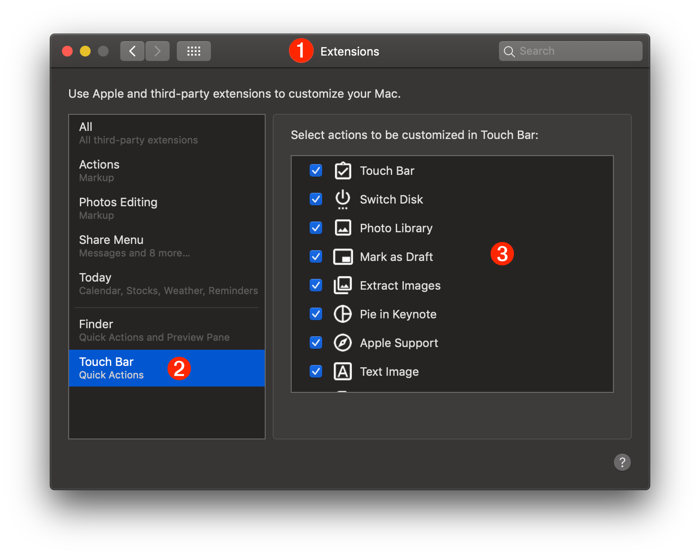
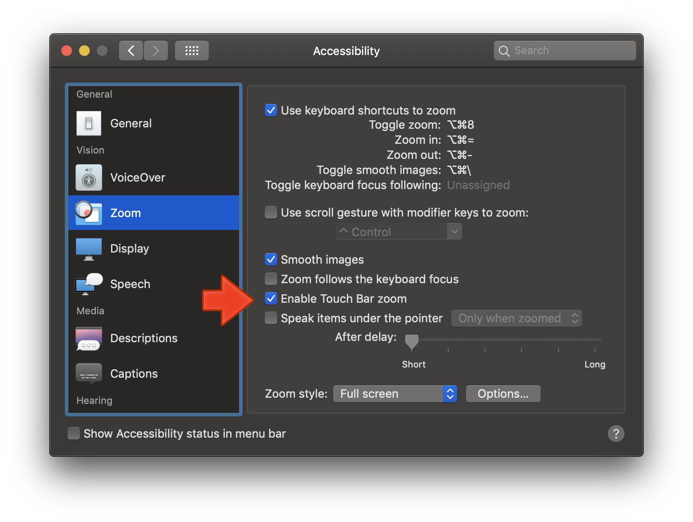
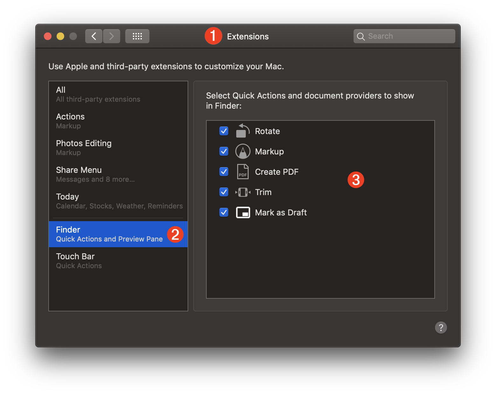
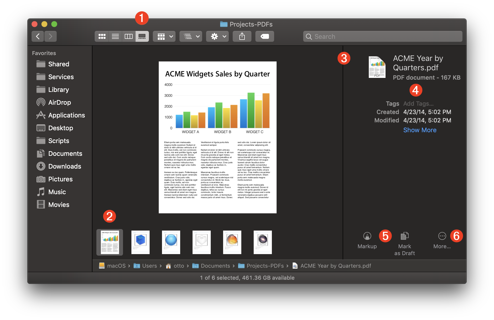
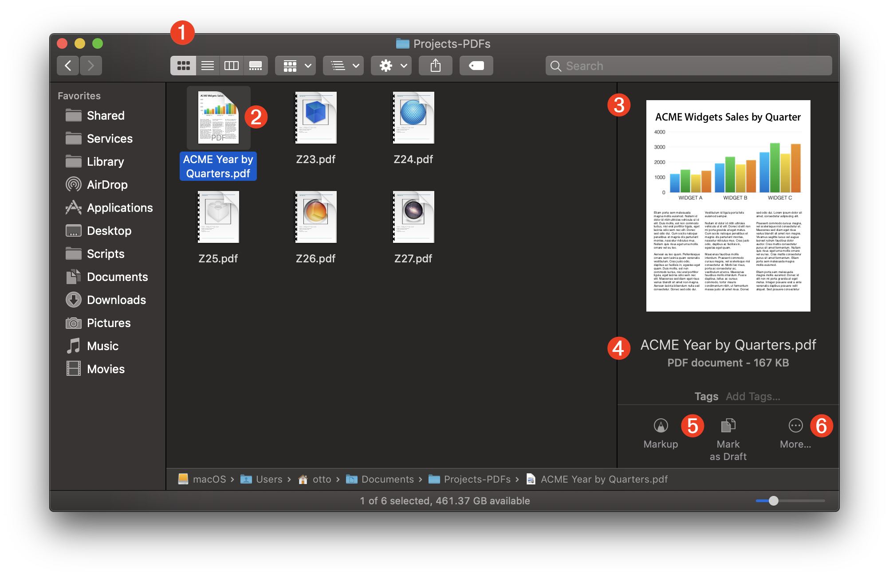
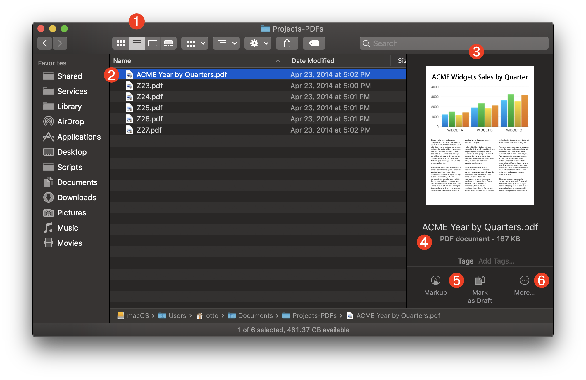
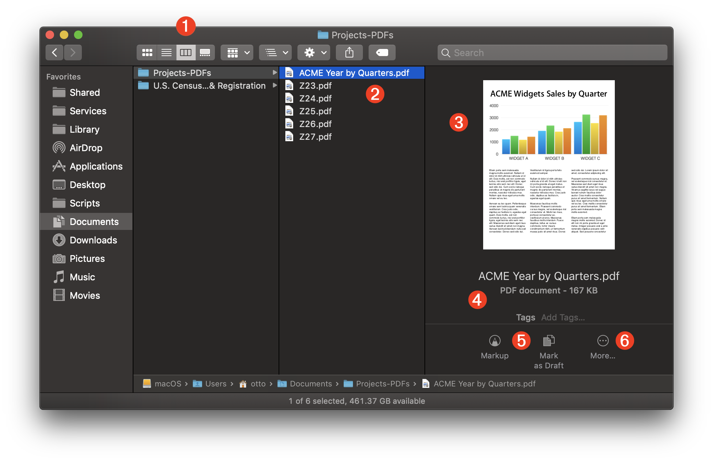

TAP TO HIDE SIDEBAR


Extensions
macOS provides a customizable way for the feature-set of applications to be extended via plug-ins called “Extensions.” Typically, extensions are Apple-provided, or come from 3rd-party developers. However, starting with macOS Mojave (v10.14), users can make their own macOS extensions by using the “Quick Action” Automator template to create workflows that are automatically installed as macOS extensions when the workflows are saved.
By default, user-created “Quick Actions” are auto-saved into the Services folder in the user Library folder and may be managed by the user in the Extensions system preference pane in either the Touch Bar or Finder extension categories.
To access the Extensions system preference pane, open the System Preferences app by selecting “System Preferences…” from the Apple menu (), and then choose “Extensions” from the app’s “View” menu.
Touch Bar Quick Actions
Installed Quick Actions for the Touch Bar can be managed by selecting the Touch Bar category in the extension categories list on the left side of the preference pane window.

1 The Extensions preference pane of the System Preferences application.
2 The Touch Bar category of the Extensions preference pane of the System Preferences application.
3 A re-orderable list of the installed Touch Bar Quick Actions. List items can be enabled and disabled by selecting the checkbox to the left of the action’s title.
Installed Touch Bar Quick Actions are displayed on the Touch Bar and can be run by pressing them with your finger.

Caveats:
- Quick Actions on the Touch Bar are “contextual” in that they will be disabled (grayed-out) if the current application is not the target application of the Quick Action workflow, or the type of data selected is not the type required as input by the workflow. Disabled Quick Actions retain their display and position on the Touch Bar.
- If the Touch Bar Zoom option in the Accessibility preference pane (see below) is active, then only up to six (6) actions can be accessed from the Touch Bar at any time, regardless of how many are installed and activated. The Touch Bar will not horizontally scroll to display available actions.

Finder Quick Actions
Installed Quick Actions for the Finder can be managed by selecting the Finder category in the extension categories list on the left side of the preference pane window.

1 The Extensions preference pane of the System Preferences application.
2 The Finder category of the Extensions preference pane of the System Preferences application.
3 A re-orderable list of the installed Finder Quick Actions. List items can be enabled and disabled by selecting the checkbox to the left of the action’s title.
Finder Quick Actions are accessed from the Preview pane of a Finder window. Here are the various Finder window view modes with the Preview pane displayed:

1 The view control of the Finder window set to Gallery (⌘4) view.
2 The selected item(s).
3 Preview (⇧⌘P) pane.
4 Item metadata.
5 Contextual Finder Quick Actions.
6 The More… popup menu for accessing other Quick Actions.

1 The view control of the Finder window set to Icon (⌘1) view.
2 The selected item(s).
3 Preview (⇧⌘P) pane.
4 Item metadata.
5 Contextual Finder Quick Actions.
6 The More… popup menu for accessing other Quick Actions.

1 The view control of the Finder window set to List (⌘2) view.
2 The selected item(s).
3 Preview (⇧⌘P) pane.
4 Item metadata.
5 Contextual Finder Quick Actions.
6 The More… popup menu for accessing other Quick Actions.

1 The view control of the Finder window set to Column (⌘3) view.
2 The selected item(s).
3 Preview (⇧⌘P) pane.
4 Item metadata.
5 Contextual Finder Quick Actions.
6 The More… popup menu for accessing other Quick Actions.
DISCLAIMER